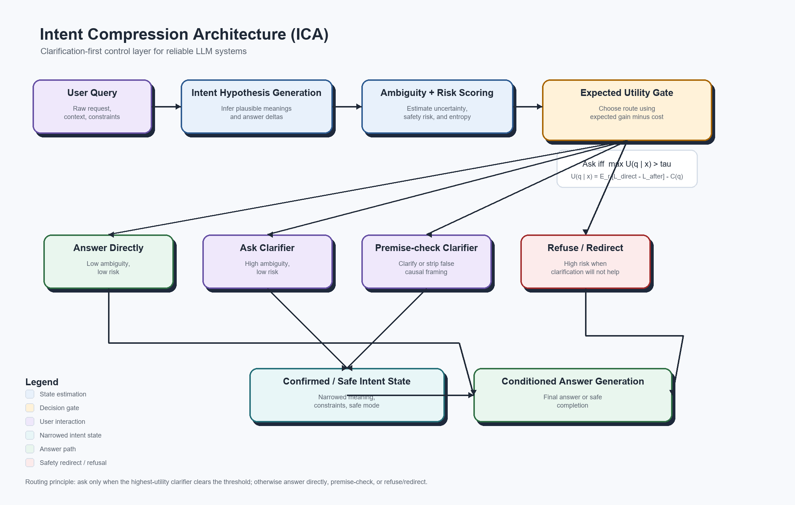

Intent control before generation or action
How Clarity Gateway learned to resolve intent before acting.
ICA turned ambiguity from hidden conversational debt into an explicit control signal: estimate intent, separate ambiguity from risk, apply a deterministic utility gate, then answer, clarify, premise-check or redirect.
Infer answer-changing intent hypotheses
Score ambiguity and risk separately
Price clarification against error and friction
Route deterministically before generation
From clarification UX to an agentic control plane.
The first work measured correction funnels and silent wrong-answer risk. The package then separated probabilistic estimation from deterministic routing. The later agentic framing expanded the compressed state from “what does the user mean?” to “what is the verified goal and state before the next action?”
The complete commit-linked chronology is preserved in EVOLUTION.md. The previous long-form public write-up is preserved unchanged at docs/legacy/README-2026-08-18.md.
Probabilistic estimates. Explicit software control.
The historical architecture isolates uncertainty at the provider boundary and keeps routing policy inspectable and testable.

Preserved as evidence, not rewritten as the current product.
Engineering proposal · decision schema · pilot report · UCL applied example · release history.
Archive principle
Preserve → explain → validateHistorical snapshots remain frozen; maintained reference surfaces can improve without back-editing the lineage.The archive still runs.
Install the archive tooling and package, then use the local validation path:
python -m pip install -r requirements.txt
python -m pip install -e ".[dev]"
bash scripts/validate_local.shThe checks include schema validation, schema/Pydantic parity, tests, package build, CLI smoke paths and pilot report generation. No live API credential is needed.